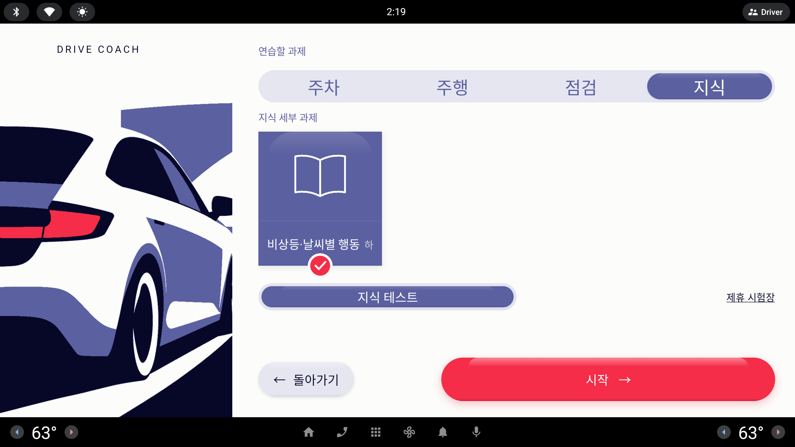
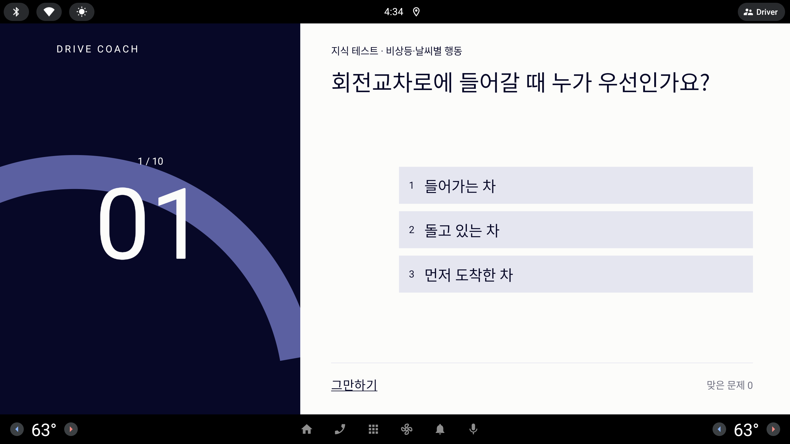
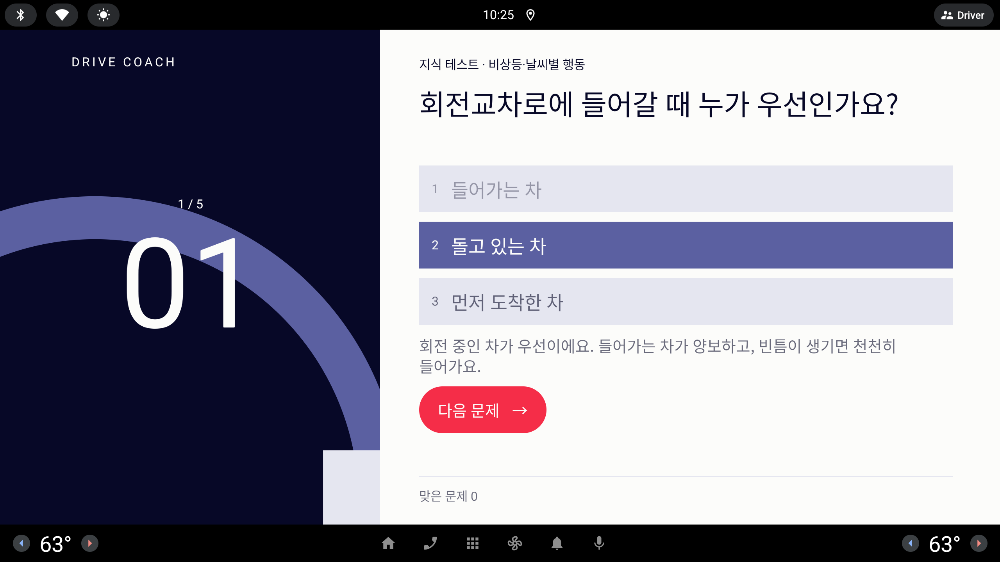

면허시험에서는 크게 다루지 않지만 길에서 매일 부딪히는 상식(노면 화살표 · 빨간불 우회전 · 교차로 양보 · 비보호 · 점멸 신호 · 지그재그 · 선 색)을 앱의 어느 자리에 둘지 구조안 여덟(A–H)과, 사용자가 든 항목을 그대로 문항으로 옮긴 내용 표다. 모든 안은 지금의 QuizItem(문제 · 보기 목록 · 정답 위치 · 이유)을 그대로 쓰거나 최소로 늘린다.
#새로운컨텐츠?
- 알고도 헷갈리는 도로 위 상식 등을 지식 혹은 점검 란에 헷갈릴만한 컨텐츠를 추가 하고 싶은데 하위 항목에 추가해야 할지 아니면 다른 큰 카테고리로 빼야 할지 아니면 다른 방법으로 제공할지 다양한 방법 제시해줘 8가지 정도
- 내용 : 도로표시 왼쪽 꺽임은 직진이 되는지. 우회전 시 신호등에 따라 어떻게 서고 가야 하는지. 직진 좌회전 사거리에서 누가 우선인지 비보호시에는 어떻게 해야 하는지 신호등이 3개 혹은 4개 혹은 특이케이스 대처 방법. 법에는 없지만 필요한 운전 그라운드룰 비상깜빡이 감사표시 등. 지그재그 표시, 노란색 파란색 흰선 점선의 용도 등 이 앱을 사용할 타겟의 눈높이에 맞춘 그리고 면허시험에서는 강조하지는 않지만 일상 속에서 필요한 노하우
- 기본적이지 않은 난이도 높다고 생각하는 항목을 따로 하위 항목으로 빼는 것도 좋고 다양하게 생각.
— 사용자 피드백 원문, 10/6 저녁 (녹화 기준 태그 inhouse-20261006-5 APK 를 눌러 보고)
해석: 질문은 둘이다 — ① 어디에(지식 하위 · 새 분류 · 점검 · 다른 길) → 구조안 A–H, ② 무엇을(항목 여덟 + 어려운 것 따로) → 아래 내용 표와 "하위 단계로 뺄 것" 표.
모든 목업은 1/3 축척 · 실제 화면은 약 3배 (853×423 = 2560×1268 dp)시안끼리 같은 과제 이름 · 같은 문항모드 알약은 "한 칸" 으로 그렸다 (#지식테스트 피드백 반영 가정)
지금
지식 분류 아래 과제는 비상등·날씨별 행동 하나, 모드는 지식 테스트(QUIZ) 하나 — 그 알약이 세 칸 폭을 다 차지한다. 문항은 SeedCatalog.quiz 열 개, 지금은 전부 3지선다다. 모델의 보기는 목록이라 둘(OX)이든 넷이든 화면이 그대로 그리지만, 넷이면 답한 뒤 이유 상자가 "맞은 문제" 줄과 부딪힐 수 있어 캡처 확인이 필요하다. 이미 시드에 회전교차로 우선 · 횡단보도 양보 · 꼬리물기 문항이 있어 "교차로 우선" 묶음으로 옮길 수 있다.

과제 시트 · 지식 — 카드 하나, 모드 알약이 세 칸. 카드 그림은 지금 과제 종류별(지식 = 책)이라 새 지식 과제도 같은 책 그림으로 나온다.

지식 테스트 — 왼쪽 Ink 에 문항 번호, 오른쪽에 문제와 보기 셋.

답한 뒤 — 정답 · 내 답 표시와 이유(why). 퀴즈의 목적은 채점보다 이 이유를 듣는 것.
과제 시트 · 지식 — 주제 카드가 넷 늘고 줄은 가로로 넘긴다 (다섯째 "운전 매너" 는 넘긴 뒤에 보임)
DRIVE COACH
연습할 과제
주차주행점검지식
지식 세부 과제
비상등·날씨별 행동하
신호와 우회전중
✓
교차로 우선중
노면 표시하
운전 매너하
지식 테스트
제휴 시험장
← 돌아가기
시작 →
A
주제 카드
지식 분류는 그대로, 세부 과제를 주제 묶음으로 넷 더한다 — 신호와 우회전 · 교차로 우선 · 노면 표시 · 운전 매너. 카드 하나 = 지식 과제 하나 = 문항 목록 하나. 카드 모서리의 하/중/상은 지금 있는 Difficulty 그대로.
들어가는 곳
과제 시트 · 지식 분류의 카드 줄(LazyRow 라 다섯 장이면 가로로 넘김).
비용
데이터만 — SeedCatalog.tasks 에 지식 과제 넷 + quizFor 분기 넷 + 문항. 화면 변경 0. 주제별 카드 그림은 선택(Codex, 없으면 전부 책 그림).
절대 규칙
지킴 퀴즈는 정차 화면 — 움직이면 잠금. 문장에 숫자 없음.
녹화 전
가능. 문구는 시드 "내용" 이라 Codex 몫 — 아래 내용 표를 핸드오프에 붙이면 된다.
장점
가장 싸다. 운전자가 이미 배운 카드 문법 그대로.
"우회전이 헷갈려" 가 바로 카드 이름 — 코치 대화 의도(지식 + 주제)와도 곧장 이어진다.
주의점
한 줄에 카드 넷이 꽉 차서 다섯째(운전 매너)는 넘겨야 보인다 — 넘김 표시가 없다.
"어려운 것 따로" 는 모서리 글자 하나뿐 — 사용자가 바란 하위 단계로는 약하다(C 와 묶으면 해결).
과제 시트 — 분류 알약 다섯째 "상식"
DRIVE COACH
연습할 과제
주차주행점검지식상식
상식 세부 과제 · 면허시험엔 덜 나오지만 길에서 헷갈리는 것
신호와 우회전중
✓
교차로 우선중
노면 표시하
운전 매너하
지식 테스트
제휴 시험장
← 돌아가기
시작 →
B
다섯째 분류
분류 트랙에 상식 을 더한다. 지식 = 시험·안전 수칙(비상등 · 날씨), 상식 = "알고도 헷갈리는 일상 노하우". 상식 아래 카드는 A 의 넷과 같다.
들어가는 곳
과제 시트 분류 트랙(네 칸 → 다섯 칸).
비용
모델 — TaskType 값 추가(또는 지식 과제에 묶음 표시) + supports() · 분류 이름 · 홈 제안 문구 · 코치 의도 목록 · Copilot 프롬프트의 분류 설명까지 손이 간다. 화면은 트랙 칸 수만.
절대 규칙
지킴 정차 화면만.
녹화 전
비추천 브리프상 분류 트랙(주차·주행·점검·지식)은 확정 항목이다.
장점
"새 콘텐츠가 생겼다" 가 가장 크게 보인다 — 발표 한 컷 감.
지식(시험형)과 상식(일상형)의 결이 이름으로 갈린다.
주의점
지식과 상식의 경계가 운전자에게 모호하다(비상등은 어느 쪽?).
칸이 다섯이면 알약 한 칸이 좁아지고, 확정된 트랙을 다시 연다.
과제 시트 · 지식 — 모드 트랙 자리가 "난이도" 세 칸이 된다 (C) · 카드 모서리 단계 글자 (C′)
DRIVE COACH
연습할 과제
주차주행점검지식
지식 세부 과제
기본
비상등·날씨별 행동하
헷갈리는
신호와 우회전중
✓
헷갈리는
교차로 우선중
기본
노면 표시하
난이도
기본헷갈리는고수
이 주제의 헷갈리는 문항만 풀어요.
← 돌아가기
시작 →
C
난이도 세 칸
지식 과제는 모드가 하나뿐이라 모드 트랙이 비어 있다 — 그 자리를 기본 · 헷갈리는 · 고수 세 칸으로 쓴다(한 칸씩이라 #지식테스트 피드백과도 맞는다). 주제를 고르고 단계를 고르면 그 단계 문항만. 카드 위 작은 태그는 "이 주제의 주 단계".
들어가는 곳
과제 시트의 모드 트랙 자리(지식 분류에서만).
비용
모델(작음) — QuizItem 에 단계 값 하나, quizFor(task, tier). 상태기계는 "지식 테스트" 그대로, 화면은 트랙 라벨만 바뀐다. C′(데이터만) — 단계를 별도 과제로: 헷갈리는 상식(중) · 고수 상식(상) 카드 둘. 카드 모서리 하/중/상이 이미 나온다.
절대 규칙
지킴
녹화 전
C′ 만 가능. C 는 이후.
장점
사용자가 말한 "어려운 것은 따로 하위 항목" 을 가장 직접 보여 준다.
"고수" 칸은 다 맞히면 다음 단계로 — 회차가 쌓이는 앱 논리와 같다.
주의점
D(OX 모드)와 같은 자리를 쓴다 — 둘 다 고르면 트랙이 둘 필요.
단계별 문항 수가 고르지 않으면 "고수" 가 두세 문항으로 끝날 수 있다.
① 과제 시트 · 지식 — 모드 알약 둘 (한 칸씩)
DRIVE COACH
연습할 과제
주차주행점검지식
지식 세부 과제
비상등·날씨별 행동하
신호와 우회전중
교차로 우선중
노면 표시하
지식 테스트OX 빠른 확인
② OX 빠른 확인 — 답한 뒤 (보기 둘을 큰 타일로)
DRIVE COACH
3 / 8
03
OX 빠른 확인 · 신호와 우회전
빨간불이어도, 정지선 앞에서 일단 멈춘 뒤라면 우회전할 수 있다.
정답 · 내 답O맞아요
X아니에요
일단 멈춘 뒤 보행자와 다른 차를 방해하지 않을 때만 돌아요. 우회전 신호등이 따로 있으면 초록 화살표일 때만 가요.
그만하기
다음 문제 →
D
OX 빠른 확인
"헷갈리는 상식" 은 대개 맞다/아니다 한 판정이다. 지식 과제의 둘째 모드로 OX 를 두고, 보기 둘을 화면 절반씩의 큰 타일로. 4지선다보다 읽을 것이 적어 한 문항이 짧다 — 신호 대기처럼 짧은 정차에 맞는다.
들어가는 곳
지식 과제의 모드 트랙(둘째 알약) + 퀴즈 화면의 OX 배치.
비용
데이터판 — OX 문항은 "보기 둘(맞아요 / 아니에요)" 인 QuizItem 이라 모델 변경 없이 지금 화면이 세로 두 줄로 그린다(과제를 따로 두거나 문항에 섞음). 정식판 — LessonMode.OX 추가(supports) + 큰 타일 배치(Codex).
절대 규칙
지킴 정차 화면. 타일이 커서 터치 실수도 적다.
녹화 전
데이터판만 가능.
장점
"알고도 헷갈리는" 의 결에 가장 맞는 형식 — 오답 이유가 곧 교정.
음성으로 묻고 답하기(추후 STT)에도 가장 쉬운 형식.
주의점
찍어도 반은 맞는다 — 평가보다 "확인" 이라는 이름을 지킨다.
C 와 모드 트랙 자리를 다툰다.
① 홈 — 아래 안내 줄 자리에 "오늘의 한 장"
DRIVE COACH
연수생 · 장롱 10년차 · 목표 아이 등하원
오늘은 가볍게, 주차부터 해 볼까요?
후면 직각 주차 · 가이드 모드
처음은 제가 순서대로 함께할게요.
시작 →
과제·모드 바꾸기
코치와 고르기
오늘의 한 장 · 신호와 우회전
빨간불이 깜빡이면 어떻게 할까요?
답 보기
관리자잘한 주차못한 주차정차출발문 열기더 보기
② "답 보기" 를 누르면 같은 카드가 펼쳐진다 (같은 축척 일부)
오늘의 한 장 · 신호와 우회전
빨간불이 깜빡이면 어떻게 할까요?
정지선 앞에서 일단 멈춘 뒤, 살피고 지나가요.
노란불이 깜빡이면 멈추지 않아도 되지만 천천히 주의하며 가요.
이 주제 더 풀기 →
E
오늘의 한 장
홈 맨 아래 안내 줄(지금 "오늘은 편안한 곳에서 주차부터 연습해 봐요.") 자리에 하루 한 문항 카드. 앱을 켤 때마다 조용히 하나씩 익힌다. 답을 보면 그 주제 카드(A)로 이어지는 링크.
들어가는 곳
홈 오른쪽 칼럼 아래(예약 카드가 있으면 예약 카드가 우선, 한 장은 숨김).
비용
새 카드 1(Codex) + "오늘 고르기" 규칙(날짜 → 문항, 순수 Kotlin) — 문항은 QuizItem 재사용(question + why 첫 문장).
절대 규칙
지킴 홈은 정차 화면. 확인 홈이 움직일 때 카드를 숨기는지 잠금 규칙 점검 필요.
녹화 전
이후. 홈은 영상의 첫 컷이라 지금 바꾸면 대본·컷 재측정이 생긴다.
장점
과제를 일부러 고르지 않아도 콘텐츠가 닿는다 — 장롱면허 사용자의 "부담 없는 시작" 과 맞다.
홈 아래 빈 줄을 쓰므로 레이아웃이 크게 안 흔들린다.
주의점
홈 요소가 하나 늘어 "시작" 의 무게가 줄 수 있다.
예약 카드 · 관리자 띠 · 코치 알약과 자리 다툼.
① 리포트 요약 — 방금 한 과제와 이어지는 상식 한 장 (좌회전 방향지시등 → 비보호 좌회전)
DRIVE COACH
연습한 회차
02
회
마지막 회차의 판정
방향지시등을 미리 켰어요 돌 때 속도를 줄였어요 돌고 나서 껐어요
✓ ✓ ✓
오늘의 기록
신호를 미리 켜는 습관이 잡혀 가요.
좌회전 방향지시등 · 힌트
이어서 알아 두면 좋은 것 · 교차로 우선
비보호 좌회전은 언제 할 수 있을까요?
한 문제 풀기다음에요
다시 시작 →
자세히 보기
진단서
신호 출처
실신호 0 · 시뮬레이션 4 · 미측정 0
② 브리핑 — 같은 연결표로 "오늘 길에서 만날 수 있는 것" 한 줄 (출발 전, 정차)
DRIVE COACH
연습 준비
방향지시등, 회전 속도와 선을 볼게요.
좌회전 방향지시등 · 힌트 모드
오늘 길에서 만날 수 있는 것
'비보호' 표지 — 초록불에서만, 마주 오는 차를 먼저 보내요.
F
과제에 이어 붙이기
상식을 따로 찾아가지 않아도, 방금 연습한 과제와 이어지는 것을 과제 앞뒤에 한 장씩. 좌회전 방향지시등 → 비보호 좌회전, 일반 도로 코스 → 빨간불 우회전, 차선 변경 → 흰 실선·점선, 회전교차로 → 진입 양보, 출발 전 점검 → 비상등 감사 표시.
들어가는 곳
리포트 요약(다시 시작 위) · Done 화면 아래 · 브리핑 한 줄. 전부 정차 화면.
비용
연결표(데이터) 과제 id → 문항 id 목록(SeedCatalog, Claude) + 카드 1(Codex). "한 문제 풀기" 는 기존 퀴즈 흐름에 문항 하나만 넘김.
절대 규칙
지킴 주행(Driving) 중에는 말하지도 띄우지도 않는다 — 브리핑과 정차 뒤에만.
녹화 전
이후. 리포트 · 브리핑은 본편 컷이라 대본 영향.
장점
"과제 단위 연습" 이라는 제품 논리에 가장 자연스럽게 녹는다 — 심사 설명이 쉽다.
필요한 순간에 하나만 — 학습 효과가 가장 크다.
주의점
리포트 · 프로필 D 카드(라운드 22)와 같은 자리 — 한 번에 하나만 뜨게 우선순위가 필요.
연결표가 과제 늘 때마다 같이 늘어야 한다.
코치 시트 — 말 카드로 묻고, 답은 지식 문항의 이유에서 가져온다
DRIVE COACH
코치와 이야기
헷갈리는 도로 상식도 물어보세요.
우회전할 때 언제 서요?
코치
빨간불이면 정지선 앞에서 일단 멈춘 뒤, 사람과 차를 살피고 돌아요. 우회전 신호등이 따로 있으면 초록 화살표일 때만 가요.
지식 카드 '신호와 우회전' 의 답이에요
비보호는 언제 돼요?노란불이 깜빡이면요?이 주제 문제 풀래요
음성 입력 · 시뮬레이션
카드를 누르면 그 말을 한 것으로 보내요.
← 돌아가기
G
코치에게 묻기
사내 검증 #5 의 말 카드에 "상식 질문" 갈래를 더한다. 운전자가 "우회전할 때 언제 서요?" 를 누르면 코치가 짧게 답하고, 이어서 풀 문제로 보낸다. 답 문장은 AI 가 지어내지 않고 지식 문항의 why 에서 가져와 출처를 한 줄로 밝힌다.
들어가는 곳
홈 코치 시트(정차) — 말 카드 줄과 대화 말풍선.
비용
의도 하나 + 연결 — 의도 목록에 "지식 질문(문항 id)" 추가, 키워드 규칙(사외)·Copilot(사내)은 문항 id 만 고르고 답은 앱이 문항에서 꺼낸다. 말 카드 부품은 #5 와 공유.
절대 규칙
지킴 코치 시트는 정차 화면. 주행 중 AI 발화 없음(AGENTS AI 경계 그대로).
녹화 전
말 카드(#5)를 녹화에 넣는다면 카드 하나로 맛보기 가능, 의도 연결은 이후.
장점
"화내지 않는 조수석" — 옆자리 사람에게 묻듯 묻는다. 콘셉트에 가장 가깝다.
법규 문장을 AI 가 만들지 않아 틀린 상식을 말할 위험이 낮다.
주의점
문항에 없는 질문엔 "아직 모르는 내용이에요" 로 정직하게 — 만능처럼 보이면 안 된다.
답이 길면 말풍선이 넘친다 — why 첫 두 문장까지만.
① 과제 시트 · 점검 — 둘째 카드 "도로 표시 읽기"
DRIVE COACH
연습할 과제
주차주행점검지식
점검 세부 과제
출발 전 점검하
도로 표시 읽기중
그림 퀴즈
② 그림 퀴즈 — 왼쪽 Ink 패널이 노면 그림이 된다
DRIVE COACH
가운데 두 줄 = 황색 실선
그림 퀴즈 · 도로 표시 읽기
빨간 차가 있는 차로, 바닥 화살표대로라면 어디로 갈 수 있나요?
1직진
2좌회전
3직진과 좌회전 둘 다
그림은 실제 노면 색(황색 · 청색)으로 그린다 — 교육 그림에 한한 색 예외 필요.
그만하기
H
도로 표시 읽기
사용자가 말한 "점검 란" 쪽. 출발 전 점검 옆에 출발 전 2분 그림 문제: 노면 화살표 · 선 색 · 지그재그처럼 눈으로 읽어야 하는 것만 그림으로 묻는다. 차 안에서 시동 전 "오늘 길 미리 보기" 로 둔다.
들어가는 곳
과제 시트 · 점검 분류 둘째 카드 + 퀴즈 화면의 왼쪽 패널(그림).
비용
모델 — supports() 가 지금 QUIZ 를 지식 과제에만 허용 → 점검 과제에도 허용(또는 지식 과제를 점검 칸에 노출) + QuizItem 에 그림 키 추가 + 노면 그림 여러 장(Codex).
절대 규칙
지킴 정차 화면. 색 노면 색을 그대로 그리려면 다섯 토큰 밖의 색이 필요 — 교육 그림 한정 예외를 정해야 한다.
녹화 전
이후. 그림 제작량이 가장 많다.
장점
노면 표시는 글보다 그림이 압도적으로 빠르다 — 이 콘텐츠에 가장 맞는 형식.
점검 = "출발 전에 하는 것" 이라는 분류 뜻과 맞는다.
주의점
점검은 지금 "차 조작 확인(신호 측정)" 과제라 퀴즈가 섞이면 분류 뜻이 흐려진다.
그림 · 색 예외 · 모델 변경 — 비용이 가장 크다.
여덟 안 비교
안
들어가는 곳
비용
절대 규칙 (정차 · 문장 숫자 없음)
녹화 10/7–8 전
A
주제 카드
지식 세부 과제 줄
데이터만
지킴
가능
B
다섯째 분류 "상식"
분류 트랙
모델 TaskType · 프롬프트 · 의도
지킴
비추천 확정 트랙
C
난이도 세 칸
모드 트랙 자리
모델(작음) / C′ 데이터만
지킴
C′ 만 가능
D
OX 빠른 확인
모드 트랙 + 퀴즈 배치
데이터판 데이터만 / 정식 모드 + 화면
지킴
데이터판만
E
오늘의 한 장
홈 아래 줄
새 카드 + 고르기 규칙
지킴 · 홈 이동 시 숨김 확인
이후
F
과제에 이어 붙이기
리포트 · Done · 브리핑
연결표(데이터) + 카드 1
지킴 · 주행 중 발화 없음
이후
G
코치에게 묻기
코치 시트 말 카드
의도 1 + 말 카드(#5 공유)
지킴 · 답은 고정 문항에서
맛보기만
H
도로 표시 읽기
점검 분류 + 그림 퀴즈
모델 + 그림 · 색 예외
지킴
이후
모든 안이 정차 화면에만 있다 — 퀴즈 · 리포트 · 홈 · 코치 시트는 속도 > 5 km/h 면 잠금(터치 0). 운전자 문장(이유 · 카드 문구)에는 숫자를 넣지 않았다.
내용 표 — 사용자 항목 여덟을 문항으로
묶음 = A 의 주제 카드, 단계 = C 의 세 칸. 보기 넷 중 흐린 것은 지금 화면(3지선다)에 맞춰 녹화 전에 넣을 때 뺄 보기. 이유는 운전자에게 들리는 문장이라 숫자 · 연도를 넣지 않았고, 근거는 오른쪽 메모에만.
사용자 항목
묶음 · 단계
문제
보기
이유 (why)
근거 · 메모
1
노면 화살표 (왼쪽 꺾임에서 직진?)
노면 표시 기본
차로 바닥에 왼쪽으로 꺾인 화살표만 있어요. 이 차로에서 직진해도 되나요?
신호만 맞으면 직진해도 돼요
안 돼요, 이 차로는 좌회전만 해요
앞차가 직진하면 따라가도 돼요
밤에는 직진해도 돼요
바닥 화살표는 그 차로에서 갈 수 있는 방향이에요. 직진하려면 미리 직진 화살표가 있는 차로로 옮겨요.
노면표시 "진행방향". 직진·좌회전 겸용 화살표면 둘 다 가능. 위반 시 적용 조항·범칙금은 출처 확인 필요 — 문장에서 뺐다.
2
우회전 — 신호에 따라 서고 가기
신호와 우회전 헷갈리는
차량 신호가 빨간불일 때 교차로에서 우회전하려면?
멈추지 않고 천천히 돌아요
초록불이 될 때까지 기다려요
정지선 앞에서 일단 멈춘 뒤, 보행자와 다른 차를 방해하지 않게 돌아요
경적을 울리고 돌아요
빨간불 우회전은 일단 멈춘 뒤에만 돼요. 우회전 신호등이 따로 있으면 초록 화살표일 때만 가요. 횡단보도에 사람이 건너거나 건너려 하면 멈춰요.
2023-01-22 시행(도로교통법 시행규칙 신호의 뜻 개정) — 적색 시 정지선 · 횡단보도 · 교차로 직전 일시정지 후 우회전, 우회전 신호등이 있으면 녹색 화살표 때만. 횡단보도 일시정지는 2022-07 시행 개정(보행자가 "건너려 할 때" 포함, 시드 crosswalk-yield 와 같은 내용).
3
교차로 우선순위 (신호 없는 사거리)
교차로 우선 헷갈리는
신호등 없는 교차로에 나와 오른쪽 길의 차가 동시에 들어가려 해요. 누가 먼저?
오른쪽 길의 차가 먼저예요
내가 먼저 가요
차가 더 큰 쪽이 먼저예요
경적을 먼저 울린 차가 먼저예요
이미 교차로에 들어간 차가 먼저, 내 길이 좁으면 넓은 길의 차가 먼저, 동시에 들어가면 오른쪽 차가 먼저예요. 좌회전하는 차는 직진하거나 우회전하는 차에 양보해요.
도로교통법 제26조(교통정리가 없는 교차로에서의 양보운전). 시드의 회전교차로 · 꼬리물기 문항도 이 묶음으로.
4
비보호 좌회전
교차로 우선 헷갈리는
'비보호' 표지가 있는 교차로에서 좌회전할 수 있는 때는?
빨간불일 때
노란불일 때 서둘러서
초록불일 때, 마주 오는 차를 방해하지 않을 때
언제든 비어 보이면
비보호 좌회전은 초록불에서만, 마주 오는 차를 먼저 보내고 해요. 빨간불에 돌면 신호 위반이에요.
비보호좌회전 표지 · 보조표지 "녹색신호시". 사고 시 과실 비율은 출처 확인 필요 — 문장에서 뺐다.
5
3색 · 4색 신호등과 특이 신호
신호와 우회전 헷갈리는
교차로 신호등에 빨간불이 깜빡이고 있어요.
그냥 지나가요
정지선 앞에서 일단 멈춘 뒤 주의하며 지나가요
초록불이 켜질 때까지 기다려요
상향등을 켜고 지나가요
빨간불 깜빡임은 일단 멈춤이에요. 노란불 깜빡임은 멈추지 않아도 되지만 주의하며 천천히 지나가요.
시행규칙 신호의 뜻 — 황색 등화 점멸: 주의하며 진행 / 적색 등화 점멸: 일시정지 후 진행. 4색 = 적 · 황 · 녹색 화살표(좌회전) · 녹. 기본 단계 문항: "녹색 화살표 = 그 방향으로 가도 됨".
6
법에 없는 매너 (비상등 감사)
운전 매너 기본
끼어들 때 양보해 준 뒤차에 고마움을 전하는 흔한 방법은?
비상등을 짧게 깜빡여요
경적을 짧게 울려요
상향등을 켜요
브레이크를 살짝 밟아요
법에 정해진 신호는 아니고 운전자들 사이의 관행이에요. 짧게 켰다 끄고, 오래 켜 두면 고장이나 정차로 오해할 수 있어요.
관행 — 법정 신호 아님(문장에 그대로 밝힘). 같은 묶음 후보: 끼어들기 전 방향지시등, 경적 자제.
7
지그재그 노면 표시
노면 표시 헷갈리는
흰색 지그재그 선이 차로에 그려져 있어요. 무슨 뜻일까요?
차로를 마음대로 바꿔도 되는 구간이에요
잠깐 세워도 되는 자리예요
앞에 횡단보도가 있으니 속도를 줄이고 살피라는 표시예요
공사 구간이 끝났다는 표시예요
지그재그 선은 앞에 횡단보도가 있다는 뜻이에요. 사람이 보이면 멈출 수 있게 미리 천천히 가요.
서행 · 주의 유도 표시. 공식 명칭 · 번호, 그 구간의 앞지르기 · 주정차 금지 효과는 출처 확인 필요 — 문장에 넣지 않았다.
8
노란 · 파란 · 흰 선, 실선 · 점선
노면 표시 기본
흰색 실선으로 나뉜 차로에서는?
언제든 차로를 바꿔도 돼요
차로를 바꾸지 않아요
버스만 다니는 차로예요
반대 방향 차로예요
같은 방향 차로는 흰 선으로 나눠요. 점선이면 바꿔도 되고 실선이면 바꾸지 않아요. 노란 선은 반대 방향과 나누는 중앙선, 파란 선은 버스전용차로예요.
황색 = 중앙선 · 반대 방향 분리, 백색 = 같은 방향 차로, 청색 = 버스전용차로. 실선 = 넘지 않음/차로 변경 금지, 점선 = 허용. 세부(가장자리 황색 · 청색 점선)는 아래 고수 단계.
하위 단계로 뺄 것 — "헷갈리는" · "고수"
위 여덟 중 2 · 3 · 4 · 5 · 7 은 이미 "헷갈리는". 아래는 같은 주제를 한 단계 더 판 문항 — C 의 고수 칸, C′ 의 고수 상식 과제, D 의 OX 로 쓰기 좋다.
단계
묶음
문제 (OX 로도 씀)
정답 · 이유
근거 · 메모
h1
헷갈리는
신호와 우회전
노란불이 켜졌는데 이미 교차로에 들어와 있다면?
멈추지 말고 빨리 교차로 밖으로 빠져나가요. 들어가기 전이면 정지선 앞에 서요.
시행규칙 신호의 뜻(황색 등화).
h2
헷갈리는
신호와 우회전
초록불에 우회전하는데 횡단보도 앞에서 사람이 건너려 해요.
횡단보도 앞에서 멈춰 먼저 보내요. 건너려 할 때도 멈춰요.
2022-07 시행 개정. 시드 crosswalk-yield 와 겹침 — 묶음만 옮김.
g1
고수
신호와 우회전
우회전 신호등이 따로 있는 교차로, 그 신호가 빨간 화살표예요.
초록 화살표가 켜질 때까지 정지선 앞에서 기다려요.
2023-01-22 시행 — 우회전 신호등이 있으면 녹색 화살표 때만.
g2
고수
신호와 우회전
경찰관의 손 신호와 신호등이 다르게 말하고 있어요.
경찰관의 손 신호를 따라요.
도로교통법 제5조(신호 또는 지시에 따를 의무).
g3
고수
교차로 우선
신호등이 꺼져 있는 교차로라면?
신호 없는 교차로처럼 — 먼저 들어간 차, 넓은 길, 오른쪽 차 순으로 양보하며 천천히.
출처 확인 필요 — 고장 · 소등 신호기를 "교통정리가 없는 교차로" 로 보는 근거 확인 후 넣는다.
g4
고수
노면 표시
길 가장자리에 노란 점선이 그어져 있어요. 잠깐 세워도 되나요?
잠깐 서는 정차는 되지만 주차는 안 돼요. 노란 실선이면 정차도 안 돼요.
노면표시 정차 · 주차금지(가장자리 황색 실선 = 주정차 금지, 점선 = 주차 금지). 정차 허용 시간은 숫자라 문장에서 뺌.
g5
고수
노면 표시
중앙선이 한쪽은 노란 실선, 한쪽은 노란 점선이에요. 내 쪽이 점선이면?
앞지르기 등 꼭 필요할 때 안전을 확인하고 넘을 수 있어요. 실선 쪽에서는 넘지 않아요.
복선 중앙선(실선 + 점선). 넘을 수 있는 경우의 세부는 출처 확인 필요.
g6
고수
노면 표시
파란 점선 버스전용차로, 일반 차는 언제 들어갈 수 있나요?
표지판에 적힌 운영 시간 밖, 또는 우회전을 위해 표시된 구간에서만.
청색 실선 = 전일 · 점선 = 시간제로 흔히 설명되나 지역 · 구간마다 다름 — 출처 확인 필요. 확인 전엔 넣지 않는 것을 권장.
확인이 필요한 사실 (문항에 넣기 전에)
지그재그 노면표시의 공식 명칭 · 번호와, 그 구간에 앞지르기 · 주정차 금지 효과가 있는지.
청색 실선 · 점선의 전일/시간제 구분과 버스전용차로 우회전 진입 허용 구간.
신호기가 꺼지거나 고장 난 교차로를 신호 없는 교차로 규칙(제26조)으로 보는 근거.
복선 중앙선(실선 + 점선)에서 점선 쪽이 넘을 수 있는 경우의 범위.
노면 화살표 위반의 적용 조항 · 범칙금, 비보호 좌회전 사고 과실 비율(둘 다 문장에서는 뺐다).
URL 은 붙이지 않았다 — 확인한 출처만 나중에 docs/INTEGRATION.md 가정 로그 형식으로 남긴다.
추천
지금은 A + C′ (데이터만) · 제출 뒤 F → G → E
녹화 전(10/7–8): 지식 아래에 주제 카드 넷(A)을 더하고, 위 내용 표의 여덟 문항을 묶음대로 넣는다. "어려운 것 따로" 는 별도 과제 헷갈리는 상식(중) 하나로(C′) — 카드 모서리 단계 글자가 이미 나오고, 안에 h1 · h2 · g1 · g2 · g4 를 "~해도 된다" 문장으로 바꾼 "맞아요 / 아니에요" 보기 둘짜리 문항으로 섞으면 D 의 OX 맛도 모델 변경 없이 난다. 화면 · 상태기계 변경 0, 보기는 셋으로(흐린 보기 제거). 단, 녹화 태그 뒤에 넣으면 지식 시트 컷이 바뀌므로 새 태그를 낼 때만 함께 넣고, 아니면 제출 뒤로.
제출 뒤 · 발표 로드맵: F(과제 뒤 이어지는 상식 — 제품 논리에 가장 잘 녹음) → G(말 카드 질문 갈래, 답은 고정 문항에서) → E(홈 한 장). C 정식판(난이도 세 칸)은 D 정식판과 자리가 겹치니 하나만. B 는 확정 트랙을 다시 열고, H 는 그림 · 색 예외 · 모델이 모두 필요해 보류.